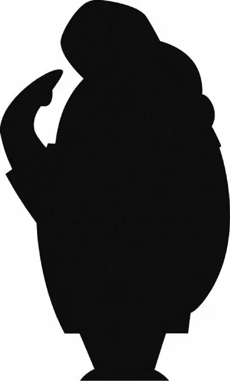

“Sorry, Mr. Fredricksen. You don’t seem like a public menace to me.” The police officer smiled apologetically as she dropped Carl off at his front door. Carl had just spent the entire day in court. The judge had ruled that Carl was guilty of assaulting the construction worker.’
“Take this.” The officer handed Carl a brochure for Shady Oaks Retirement Village. “The guys from Shady Oaks will be by to pick you up in the morning, okay?”
Carl heard the police car drive away. He looked down at the cheerful, good-looking people in the brochure. The judge had said that Carl couldn’t live by himself anymore. He didn’t have to go to jail— but he did have to go to a retirement home. To Carl, that was just as bad. He didn’t want to leave his little house—Ellie’s clubhouse.
“What do I do now, Ellie?” he wondered aloud.
That night, Carl walked through the quiet house. Every single thing brought back memories of Ellie. As Carl dug his suitcase out of the closet, he found Ellie’s old adventure book. Carefully, he untied the string that held it closed. He flipped through the photos of Charles Muntz and his famous blimp.
When Carl came to the page marked STUFF I’M GOING TO DO, he stopped and sighed. He couldn’t read any further. Ellie had never gone on her adventure. He’d promised her. He’d crossed his heart. But he’d waited too long.
Slowly, Carl closed Ellie’s book. He gazed up at the mantel over the fireplace. He looked at the poster of South America, the pottery, the woven rug, the bird figurine, and the little toy blimp. But most of all, he looked at Ellie’s painting of their house on the tepui.
Then he glanced at the Shady Oaks pamphlet.
As he looked up at the mantel one more time, Carl’s eyes narrowed just a bit. He smiled, and then crossed his heart. He’d made a decision.
By the middle of the night, most of the block was quiet and dark. Only the Fredricksen house was bright, the lights still on. Inside, Carl worked late into the night. He had a lot to prepare.
The next morning was sunny and clear as the Shady Oaks van pulled up in front of Carl’s house. Two men got out. They were nurses from the retirement home.
The nurse named George knocked on the door.
“Morning, gentlemen,” Carl said, opening the door. He had a suitcase in his hand.
“Good morning, Mr. Fredricksen,” George said. “You ready to go?”
“Ready as I’ll ever be.” Carl handed the suitcase to the other nurse, A.J. “Would you do me a favor and take this? I’ll meet you at the van in just a minute. I, uh, want to say one last goodbye to the old place.”
“Sure,” George said, and he nodded politely. “Take all the time you need, sir.”
“That’s typical,” A.J. muttered as Carl closed the door. He and George walked toward the van. “He’s probably going to the bathroom for the eightieth time.”
George eyed the lawn. It was littered with empty helium tanks. “You’d think he’d take better care of his house？”
At that moment, a dark shadow fell over the van. George and A.J. looked up, and their jaws dropped. Hundreds of balloons were rising from behind the house. They shot into the air like water from a fountain. Their strings were all tied to Carl’s house through the chimney. As the balloons rose, the house teetered. Then it groaned. Finally, it pulled away from its foundation and floated.
Up … up … up …
The floating house knocked the van, setting off the car alarm. Carl poked his head out the window and shouted triumphantly, “So long, boys!”
George and A.J. couldn’t do anything but gape at what Carl had done!
The house soared over the town. People stared up, unable to believe what they were seeing. Birds flew alongside the house. Carl watched them, smiling to himself. He adjusted the compass and unfurled the sails, which were made of curtains hanging on curtain rods. They flapped and billowed in the wind.
Carl and Ellie were finally headed to South America. He kissed her photo.“We’re on our way, Ellie,” he said. With a happy sigh, Carl settled into his favorite chair by the fireplace.
He had just closed his eyes when he heard a knock at the door.
Carl’s eyes snapped open. A knock?
“Huh?” He stared at the front door. For a moment, he didn’t hear anything. He had finally managed to convince himself that he had imagined the knock when it sounded again.
Grumbling, Carl shuffled over to the door. He looked through the peephole. All he saw were the front porch and the clouds beyond. He threw open the door.
“Aaah!” Carl cried. Russell was clinging to the outside wall, holding on for dear life.
“Hi, Mr. Fredricksen,” Russell said nervously. “It’s me, Russell.”
“What are you doing out here, kid?” Carl demanded.
“I found the snipe,” Russell explained, “and I followed it under your porch, but this snipe had a long tail and looked more like a large mouse.”
Carl rolled his eyes. That wasn’t a snipe. It was a rat! What kind of Wilderness Explorer doesn’t know the difference between a rat and a nonexistent snipe? he wondered.
“Please let me in,” Russell begged.
“No!” Carl snapped. He shut the door.
Russell stared at the bright sun, the blue sky, and the white clouds drifting peacefully around him. This was the worst day ever.
After a moment, the door creaked open. “Oh, all right,” Carl said reluctantly, “you can come …” Russell darted inside like a bullet.
“… in,” Carl finished.
Russell panted for a moment, collecting himself. Then he looked around. “Huh. I’ve never been in a floating house before.” It was a lot like a regular house. He walked over to the fireplace and found Ellie’s drawing of the house lying on top of an open page in the atlas. “Wow, you going on a trip?” Russell asked. “‘Paradise Falls: A Land Lost in Time,’” he read from the drawing. “You going to South America, Mr. Fredricksen?”
“Don’t touch that!” Carl snatched the page from Russell’s hand and put it in his pocket. Then he slammed the atlas shut. “You’ll soil it.”
“You know, most people take a plane,” Russell said brightly, “but you’re smart because you’ll have your TV and clocks and stuff.”
Russell noticed the steering rig that Carl had set up in the living room. It was made from an old-fashioned coffee grinder with a crank handle. Carl had attached it to the weather vane with ropes. “Whoa. Is this how you steer your house?” Russell asked. “Does it really work? Oh, this way makes it go right, and that way’s left.”
Carl stumbled through the house. The way Russell was steering was making him seasick! “Kid, would you stop with the—let go of the—knock it off!”
Carl realized that he couldn’t keep Russell with him. It was too dangerous, for one thing. For another, it was too annoying.
Russell ran to the window. “Hey, look, buildings!” He looked down at the office buildings and the people bustling past on the street. Everyone was busy. Nobody looked up and noticed the house flying overhead. “That building is so close, I could almost touch it.”
Carl shuffled to the fireplace. Clearly, he didn’t have a choice. He was going to have to pull the plug on the adventure. He’d have to land the house right where they were and send Russell home.
“I know that cloud,” Russell said as he stared out the window. “It’s a cumulonimbus. Did you know that a cumulonimbus is formed when warm air goes by cool air and the airs go by each other, and that’s how we get lightning?”
But Carl wasn’t listening. He was sawing at the balloon strings with his keys. “Stayed up all night blowing up balloons … for what?” he muttered. Russell was still talking. He never seemed to stop. “That’s nice, kid,” Carl muttered, reaching up and turning off his hearing aid.
“Mr. Fredricksen,” Russell said nervously, “there’s a big storm coming. It’s starting to get scary.” Carl was still ignoring him, so he raised his voice. “We’re going to get blown to bits! We’re in big trouble, Mr. Fredricksen!”
Just then, a bolt of lightning flashed outside. The light got Carl’s attention. He turned his hearing aid back on. “What are you doing over there?” he demanded.
Russell pointed out the window at the dark clouds. “Look!”
Carl went to the window. “See?” Russell said. “Cumulonimbus.”
Thunder rumbled outside as lightning lit up the house.
Carl gasped and ran to the steering rig. He tried to steer the house out of the dark clouds, but the storm was too strong. The wheel spun, knocking Carl backward. He fell to the floor, and Russell let out a scream.
Rain lashed the house, and thunder roared. The house shifted, and Russell went flying. He landed on his back. Plates fell from the cupboards, books spilled from the shelves. Russell jumped up and tried to hide behind an umbrella stand. His backpack slid past. “My pack!” He pounced on it.
“Gotcha!” Russell kept sliding down the hall on top of the backpack. The front door swung open. Russell was about to slide through, but the door swung shut again. Russell crashed into it.
Carl struggled to his feet as photos and pictures fell from the walls. He tried to rescue his things. He grabbed what he could and tried to secure it.
Finally, Carl collapsed into his chair, exhausted. Before he knew it, his eyes had closed.
